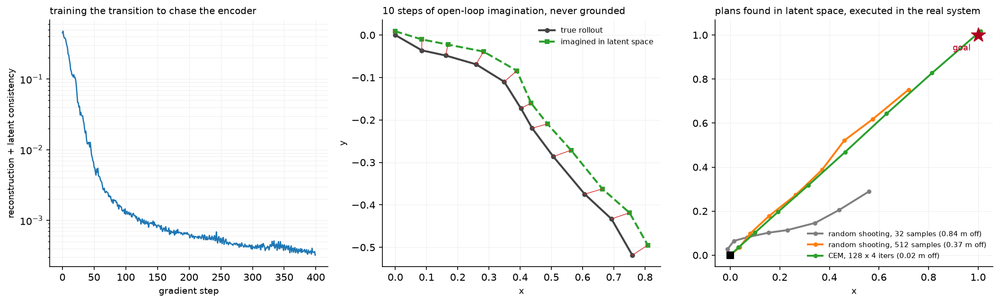

World models¶
Why this matters at staff level. A world model is a learned simulator: give it a state and an action, it gives you the next state. That single capability changes three things an autonomy company cares about, which are long-tail data synthesis, counterfactual evaluation, and planning without touching the real vehicle. Interviewers use this topic to see whether you can reason about a model whose output is evaluated by what it lets you do, not by a validation loss, and whether you know why a rollout that looks good for 2 seconds is not a simulator you can trust.
TL;DR, the interview card¶
- Two formulations. Latent dynamics: \(p(z_{t+1} \mid z_t, a_t)\) with an encoder and a decoder, so prediction happens in a compact space. Observation-space: \(p(x_{t+1} \mid x_{\le t}, a_{\le t})\), which is video generation conditioned on actions.
- RSSM (PlaNet, Dreamer) splits the latent into a deterministic recurrent path, which carries information across many steps, and a stochastic path, which represents what the model cannot predict. Dropping either breaks it in a characteristic way.
- Planning in latent space: sample action sequences, roll them forward through the transition model, score the imagined trajectory, keep the best. Random shooting is the baseline; CEM refits a Gaussian to the elite set and needs far fewer samples.
- Compounding error is the central problem. Each step's error becomes the next step's input, so open-loop rollouts diverge. A model with excellent one-step accuracy can be useless at 20 steps, which is why you evaluate multi-step rollouts and train with multi-step objectives.
- For autonomy, world models buy synthesis of rare scenarios, counterfactual evaluation ("what if that vehicle had not yielded"), closed-loop evaluation with reactive agents, and policy training without a fleet. GAIA-1, Genie and Cosmos are the generative end; Waymax and NAVSIM are the engineering end.
- The evaluation problem: a world model's video can look convincing and be dynamically wrong. The metrics that matter are downstream (does a policy trained or evaluated in it transfer) rather than perceptual.
1. Intuition first¶
A perception system answers "what is around me now". A prediction system answers "what will the other agents do". Neither answers "what would happen if I did this", and that question is the one a planner is actually asking.
You can answer it with physics if you know the dynamics. For the ego's own motion, you do: a bicycle model plus the control inputs gives you where the vehicle will be. For everything else you do not, because the dynamics of "what the pedestrian does if I creep forward" are not in any equation you can write down.
A world model learns them. Train a function that takes the current state and an action and produces the next state, from logged sequences of states and actions. Once you have it, you can roll it forward under hypothetical actions and see what happens, without a vehicle, without risk, and much faster than real time.
The representation choice separates the two families. Predicting the next image means generating pixels, which is expensive and spends most of its capacity on things that do not affect the decision, such as the exact texture of the road. Predicting a next latent compresses the state to what the model needs and makes rollouts cheap enough to do hundreds of them inside a planning loop. The cost is that a latent trained by reconstruction can discard what matters if it happens to occupy few pixels, and a small traffic light is few pixels.

The left panel is the training curve for the reconstruction plus latent-consistency objective on a toy point mass. The middle panel is a 10-step imagined rollout compared against the truth, with no grounding after the first frame: the red segments are the per-step divergence, which grows because each step's error feeds the next. The right panel is planning: three planners search for an action sequence that reaches a goal, entirely inside the model, and then their plans are executed in the real system. CEM with 128 samples over 4 iterations beats random shooting with 512, because it concentrates its samples where the good sequences are instead of sampling uniformly from the whole action space.
Work the smallest case. A point mass with state \([x, y, v_x, v_y]\) and action \(a = [a_x, a_y]\), integrated with \(v \mathrel{+}= a\,\delta t\) and \(p \mathrel{+}= v\,\delta t\). Encode the state to an 8-dimensional latent, predict \(z_{t+1} = z_t + f(z_t, a_t)\), decode back. Nothing about the encoder knows the physics, and after a few hundred gradient steps the composition of encode, roll and decode reproduces a 5-step trajectory to within a few percent. The residual form \(z + f(\cdot)\) matters: predicting the delta rather than the absolute next latent makes the identity function the default behaviour, which is correct for a system that mostly continues doing what it was doing.
2. The math¶
2.1 What a world model is¶
Given a sequence of observations \(x_{1:T}\) and actions \(a_{1:T-1}\), a world model is a distribution over futures conditioned on actions:
The latent-variable factorisation introduces \(z_t\) and assumes a Markov structure in the latent:
Training maximises a variational lower bound with an approximate posterior \(q(z_t \mid z_{t-1}, a_{t-1}, x_t)\):
The first term says the latent must retain enough to reconstruct the observation; the second says the transition model must predict what the posterior infers. The balance between them is the whole design problem: weight reconstruction too heavily and the latent stores unpredictable detail, weight the KL too heavily and the latent collapses to something the transition can predict perfectly and the decoder cannot use.
2.2 RSSM¶
PlaNet's recurrent state-space model splits the latent into a deterministic part \(h_t\) and a stochastic part \(s_t\):
with the observation decoded from \((h_t, s_t)\).
The argument for both paths is a pair of failure modes. A purely stochastic latent must carry all information through a sampled variable, so information is lost to the sampling noise at every step and the model cannot remember anything reliably over a long horizon. A purely deterministic latent cannot represent uncertainty, so when the future is genuinely ambiguous it predicts the mean, which is the same blur as in chapter 6. The deterministic path carries memory losslessly; the stochastic path carries what the model does not know.
PlaNet also introduced latent overshooting: rather than training only one-step predictions, train the \(d\)-step prediction against the posterior at \(t+d\) for several \(d\). This attacks compounding error at its source, which is that one-step training never exposes the model to its own errors as inputs.
Dreamer extends this by learning an actor and a critic entirely inside the model's imagined rollouts, with gradients flowing back through the learned dynamics, so policy improvement needs no environment interaction at all. DreamerV3 reports a single configuration solving over 150 tasks, including collecting diamonds in Minecraft from scratch, which is the strongest public evidence that model-based policy learning generalises across domains. See Part XII and Part XII for the RL machinery those actors and critics use.
2.3 Compounding error¶
Let the one-step model have error \(\epsilon\) and Lipschitz constant \(L\) in its input. Write \(\hat z_{t+1} = f(\hat z_t, a_t)\) and \(z_{t+1} = f^{*}(z_t, a_t)\). Then
so by induction
Error grows linearly when the dynamics are non-expansive and exponentially when \(L > 1\). Since real dynamics have \(L > 1\) in some directions (any unstable mode, and driving has several), the practical consequence is a horizon beyond which rollouts are unusable, and that horizon moves only logarithmically with improvements in \(\epsilon\). Cutting one-step error by 10x buys you roughly \(\ln 10 / \ln L\) extra steps, which for \(L = 1.2\) is about 13 steps and for \(L = 2\) is about 3.
Three consequences to state in an interview. One-step validation loss is close to uninformative about rollout quality. The fix is multi-step training (latent overshooting, scheduled sampling, or training directly on \(k\)-step rollouts). And when you use the model for planning, re-plan frequently with fresh observations, so the model is never asked to predict further than its usable horizon.
2.4 Planning in a learned model¶
Given a differentiable or sampleable transition, planning is an optimisation over action sequences:
Random shooting samples \(S\) sequences uniformly and takes the best. It is trivial to implement, parallelises perfectly, and needs a number of samples exponential in the horizon to cover the space, so it is only viable for short horizons or low-dimensional actions.
Cross-entropy method maintains a Gaussian over action sequences, samples from it, keeps the \(E\) best (the elite set), refits the Gaussian to them, and repeats:
CEM is a derivative-free optimiser that concentrates its sampling where good sequences have been found, so it reaches a better optimum with far fewer total samples. Its failure mode is premature convergence: if the elite set is all in one basin, \(\sigma\) collapses and the search stops exploring, which is why implementations floor \(\sigma\) or mix in fresh samples.
Model-predictive control wraps either: plan \(H\) steps, execute only the first action, observe, re-plan. Executing one step and re-planning is what keeps compounding error bounded, because the model is re-grounded in a real observation every step.
2.5 What changes for autonomy¶
Long-tail synthesis. The rare events that dominate AV risk are, by definition, rare in the data. A world model conditioned on text or on a scenario specification can generate them: a vehicle running a red light, a pedestrian emerging from between parked cars, an unusual weather condition. The generated data is only as good as the model's dynamics, so it is used for perception training (where a realistic image with a known label is what you need) more readily than for planning training (where the behaviour has to be right).
Counterfactuals. Given a logged scene, re-simulate it with one thing changed. What if the ego had accelerated instead of yielding? A log replay cannot answer that, because the other agents' logged trajectories were reactions to what the ego did. A world model with action-conditioned agents can.
Closed-loop evaluation. Chapter 6 argued that open-loop metrics mislead. Closed-loop needs a simulator whose agents react, and a learned world model is one way to get agents whose reactions came from data instead of from a hand-tuned car-following model.
Policy training. Dreamer-style learning inside the model, applied to driving. The promise is enormous (no fleet needed) and the obstacle is the same as everywhere else: a policy trained in a model exploits the model's errors, so it finds actions that are good in imagination and bad in reality. The mitigations are ensembles with disagreement penalties, conservative value estimation, and short imagination horizons with real-data grounding.
2.6 Generative video world models¶
The observation-space family predicts pixels. GAIA-1 casts world modelling as unsupervised sequence modelling: map video, text and action inputs to discrete tokens and predict the next token, which gives fine-grained control over ego behaviour and scene features and produces realistic driving video. Wayve reports scaling it to 9 billion parameters.
Genie learns from unlabelled internet video with no action labels at all, using a latent action model that infers what action must have occurred between consecutive frames, a video tokenizer and an autoregressive dynamics model, so it can generate action-controllable environments from an image or a text prompt. Cosmos packages the same idea as a platform for physical AI, with a video curation pipeline, pre-trained world foundation models and video tokenizers, released with open weights.
The common structure is worth extracting: tokenize the video, model the token sequence autoregressively (or with diffusion), condition on actions or on inferred latent actions. The same recipe LLM pretraining uses, applied to a different token stream.
3. Implementation¶
3.1 The model¶
class LatentWorldModel(nn.Module):
"""encoder → latent, action-conditioned residual transition, decoder."""
def next_latent(self, z: torch.Tensor, a: torch.Tensor) -> torch.Tensor:
"""``ẑ' = z + f([z; a])``: (N, latent), (N, action) → (N, latent)."""
return z + self.transition(torch.cat([z, a], dim=-1)) # (N, latent)
def rollout(self, z0: torch.Tensor, actions: torch.Tensor) -> torch.Tensor:
"""z0 (N, latent), actions (N, T, action) → imagined latents (N, T+1, latent)."""
zs = [z0]
z = z0
for t in range(actions.shape[1]):
z = self.next_latent(z, actions[:, t]) # (N, latent)
zs.append(z)
return torch.stack(zs, dim=1) # (N, T+1, latent)
The residual form is a design choice with a clear justification: the identity is the default, so a randomly-initialised transition network predicts "nothing changes", which is much closer to correct than a random latent and gives a sane starting point for optimisation. It also makes the effective Lipschitz constant close to 1 at initialisation, which from §2.3 means errors accumulate linearly instead of exponentially early in training.
The rollout is a Python loop over time and the latents are stacked, so the whole rollout is one
autograd graph. For a planning application you wrap it in torch.no_grad(), as the planners do;
for training a policy through it you do not, and the memory cost is linear in the horizon.
3.2 The loss¶
def world_model_loss(model, obs, actions):
"""obs (N, T+1, obs_dim), actions (N, T, action_dim)."""
n, t1, _ = obs.shape
z = model.encode(obs) # (N, T+1, latent)
recon = ((model.decode(z) - obs) ** 2).mean()
z_pred = model.next_latent(z[:, :-1].reshape(-1, z.shape[-1]),
actions.reshape(-1, actions.shape[-1])) # (N·T, latent)
z_target = z[:, 1:].reshape(-1, z.shape[-1]).detach() # (N·T, latent)
consistency = ((z_pred - z_target) ** 2).mean()
return recon + consistency
The .detach() on the target is the part worth explaining. Without it, the consistency term can
be minimised by making the encoder output a constant, since then every prediction is
correct by construction and the term goes to zero. The reconstruction term opposes that, but the collapse
direction is much easier to find than the useful one, and models do find it. Detaching means the
consistency gradient reaches only the transition network: the transition chases the encoder, the
encoder is shaped by reconstruction alone, and collapse is no longer a descent direction for the
term that would have caused it.
This is the same asymmetry as a target network in Q-learning (Part XII) and as the stop-gradient in BYOL-style self-supervised learning (Part X). Recognising the pattern across three fields is a good signal in an interview.
The model as written is deterministic, so it predicts the conditional mean of the next latent. For the toy point mass that is correct, since the dynamics are deterministic. For driving it is the chapter 6 blur problem again, and the fix is the stochastic path of an RSSM or a discrete-token autoregressive formulation.
3.3 Planning¶
def cem_plan(model, z0, cost_fn, horizon, action_dim, n_samples=256, n_elite=32, n_iters=5, action_scale=1.0):
mean = torch.zeros(horizon, action_dim) # (T, a)
std = torch.full((horizon, action_dim), action_scale) # (T, a)
with torch.no_grad():
for _ in range(n_iters):
actions = (mean + std * torch.randn(n_samples, horizon, action_dim)).clamp(-action_scale, action_scale) # (S, T, a)
zs = model.rollout(z0.expand(n_samples, -1), actions) # (S, T+1, latent)
cost = cost_fn(model.decode(zs)) # (S,)
elite = actions[cost.topk(n_elite, largest=False).indices] # (E, T, a)
mean, std = elite.mean(0), elite.std(0) + 1e-3 # (T, a) each
return mean
z0.expand(n_samples, -1) broadcasts one starting latent to every sample without copying it,
so all \(S\) rollouts run as one batched forward pass. That batching is what makes sampling-based
planning viable at all: 256 sequences over 8 steps is 8 batched matrix multiplies, not 2048
sequential ones.
The + 1e-3 on the standard deviation is the floor from §2.4. Without it, an elite set that
happens to be nearly identical collapses \(\sigma\) to zero and every subsequent iteration
samples the same sequence, so the remaining iterations do nothing.
clamp enforces action limits inside the search, which is the correct place for them: a
planner that finds an infeasible optimum and then clips it at execution time is optimising a
different problem from the one it will act in.
Full implementation
"""A tiny latent world model and planning in its latent space (PyTorch).
z_t = enc(x_t), ẑ_{t+1} = z_t + f(z_t, a_t), x̂_t = dec(z_t)
trained with reconstruction ``‖dec(z_t) − x_t‖²`` and latent consistency
``‖ẑ_{t+1} − sg(enc(x_{t+1}))‖²`` (the deterministic core of an RSSM without the stochastic
state). With a learned transition you can plan without touching the real system: sample
action sequences, roll them forward in latent space, score the imagined trajectory, and
keep refining (random shooting / cross-entropy method).
"""
from __future__ import annotations
from collections.abc import Callable
import numpy as np
import torch
from torch import nn
class PointMassDynamics:
"""Toy environment: 2-D point mass, state ``[x, y, v_x, v_y]``, action = acceleration.
``v ← v + a·dt``, ``p ← p + v·dt``; observation = state plus optional Gaussian noise.
"""
def __init__(self, dt: float = 0.1, obs_noise: float = 0.0):
self.dt, self.obs_noise = dt, obs_noise
def step(self, state: np.ndarray, action: np.ndarray) -> np.ndarray:
"""state (N, 4), action (N, 2) → next state (N, 4)."""
v = state[:, 2:] + action * self.dt # (N, 2)
p = state[:, :2] + v * self.dt # (N, 2)
return np.concatenate([p, v], axis=1) # (N, 4)
def observe(self, state: np.ndarray) -> np.ndarray:
return state + self.obs_noise * np.random.randn(*state.shape) # (N, 4)
def rollout(self, state0: np.ndarray, actions: np.ndarray) -> np.ndarray:
"""state0 (N, 4), actions (N, T, 2) → observations (N, T+1, 4)."""
obs = [self.observe(state0)]
s = state0
for t in range(actions.shape[1]):
s = self.step(s, actions[:, t])
obs.append(self.observe(s))
return np.stack(obs, axis=1) # (N, T+1, 4)
class LatentWorldModel(nn.Module):
"""encoder → latent, action-conditioned residual transition, decoder."""
def __init__(self, obs_dim: int, action_dim: int, latent_dim: int = 16, hidden: int = 64):
super().__init__()
self.encoder = nn.Sequential(nn.Linear(obs_dim, hidden), nn.ReLU(), nn.Linear(hidden, latent_dim))
self.transition = nn.Sequential(nn.Linear(latent_dim + action_dim, hidden), nn.ReLU(), nn.Linear(hidden, latent_dim))
self.decoder = nn.Sequential(nn.Linear(latent_dim, hidden), nn.ReLU(), nn.Linear(hidden, obs_dim))
def encode(self, obs: torch.Tensor) -> torch.Tensor:
return self.encoder(obs) # (N, latent)
def decode(self, z: torch.Tensor) -> torch.Tensor:
return self.decoder(z) # (N, obs)
def next_latent(self, z: torch.Tensor, a: torch.Tensor) -> torch.Tensor:
"""``ẑ' = z + f([z; a])``: (N, latent), (N, action) → (N, latent)."""
return z + self.transition(torch.cat([z, a], dim=-1)) # (N, latent)
def rollout(self, z0: torch.Tensor, actions: torch.Tensor) -> torch.Tensor:
"""z0 (N, latent), actions (N, T, action) → imagined latents (N, T+1, latent)."""
zs = [z0]
z = z0
for t in range(actions.shape[1]):
z = self.next_latent(z, actions[:, t]) # (N, latent)
zs.append(z)
return torch.stack(zs, dim=1) # (N, T+1, latent)
def world_model_loss(model: LatentWorldModel, obs: torch.Tensor, actions: torch.Tensor) -> torch.Tensor:
"""Reconstruction + latent consistency on a batch of trajectories.
obs (N, T+1, obs_dim), actions (N, T, action_dim). The consistency target is the
encoder's own next latent with the gradient stopped, so the transition chases the
encoder and the encoder is shaped by reconstruction only (avoids latent collapse).
"""
n, t1, _ = obs.shape
z = model.encode(obs) # (N, T+1, latent)
recon = ((model.decode(z) - obs) ** 2).mean()
z_pred = model.next_latent(z[:, :-1].reshape(-1, z.shape[-1]), actions.reshape(-1, actions.shape[-1])) # (N·T, latent)
z_target = z[:, 1:].reshape(-1, z.shape[-1]).detach() # (N·T, latent)
consistency = ((z_pred - z_target) ** 2).mean()
return recon + consistency
def random_shooting_plan(model: LatentWorldModel, z0: torch.Tensor, cost_fn: Callable[[torch.Tensor], torch.Tensor],
horizon: int, action_dim: int, n_samples: int = 256, action_scale: float = 1.0) -> torch.Tensor:
"""Sample ``n_samples`` action sequences, imagine them, return the cheapest (T, action_dim)."""
with torch.no_grad():
actions = (torch.rand(n_samples, horizon, action_dim) * 2.0 - 1.0) * action_scale # (S, T, a)
zs = model.rollout(z0.expand(n_samples, -1), actions) # (S, T+1, latent)
cost = cost_fn(model.decode(zs)) # (S,)
return actions[cost.argmin()] # (T, a)
def cem_plan(model: LatentWorldModel, z0: torch.Tensor, cost_fn: Callable[[torch.Tensor], torch.Tensor], horizon: int,
action_dim: int, n_samples: int = 256, n_elite: int = 32, n_iters: int = 5, action_scale: float = 1.0) -> torch.Tensor:
"""Cross-entropy method: fit a Gaussian over action sequences to the elite set, repeat.
Returns the final mean (T, action_dim). ``cost_fn`` maps decoded observations
(S, T+1, obs_dim) → cost (S,).
"""
mean = torch.zeros(horizon, action_dim) # (T, a)
std = torch.full((horizon, action_dim), action_scale) # (T, a)
with torch.no_grad():
for _ in range(n_iters):
actions = (mean + std * torch.randn(n_samples, horizon, action_dim)).clamp(-action_scale, action_scale) # (S, T, a)
zs = model.rollout(z0.expand(n_samples, -1), actions) # (S, T+1, latent)
cost = cost_fn(model.decode(zs)) # (S,)
elite = actions[cost.topk(n_elite, largest=False).indices] # (E, T, a)
mean, std = elite.mean(0), elite.std(0) + 1e-3 # (T, a) each
return mean
How you would test it. The toy dynamics against hand-computed integration. Shapes for the model. For the training: a 5-step imagined rollout must beat a "nothing moves" baseline by a large factor, which is the test that a one-step-accurate but useless model would fail. For the planners: execute the plan in the real environment (not in the model) and check it reaches the goal, which is the only test that catches a model whose imagined rollouts are self-consistent and wrong. And CEM with few samples must match or beat random shooting with few samples, which verifies the refitting actually concentrates the search.
Retype by hand¶
| Symbol | File | Target time | Why |
|---|---|---|---|
LatentWorldModel.next_latent and .rollout |
src/mlbook/perception/world_model.py |
10 minutes | The residual transition and the rollout loop; short and frequently asked. |
world_model_loss |
src/mlbook/perception/world_model.py |
12 minutes | The detached target is the one line that stops collapse. Be able to justify it. |
cem_plan |
src/mlbook/perception/world_model.py |
18 minutes | Sample, roll, score, refit. The elite selection and the std floor. |
random_shooting_plan |
src/mlbook/perception/world_model.py |
6 minutes | The baseline CEM is compared against. |
Read but do not retype: PointMassDynamics (test scaffolding), the encoder and decoder
constructors (plain MLPs).
Check yourself with:
Target: 45 minutes with the file green. The planning test is the interesting one to read: it executes the plan in the real environment rather than in the model, which is the difference between testing a world model and testing its own self-consistency.
4. Systems view: cost, failure modes, trade-offs¶
| Situation | Use | Decision rule |
|---|---|---|
| Planning in a low-dimensional, well-understood system | Analytic model, no learning | If you can write the dynamics, write them; a learned model is strictly worse |
| Planning from pixels, limited interaction budget | Latent dynamics (RSSM, Dreamer) | Rollouts must be cheap enough to do hundreds inside the control loop |
| Generating training data for perception | Observation-space video model (GAIA, Cosmos) | You need pixels because the consumer is a perception model |
| Closed-loop policy evaluation with real scenarios | Data-driven simulator (Waymax, NAVSIM) | Real initial conditions matter more than generative realism |
| Counterfactual analysis of a logged incident | Action-conditioned model with reactive agents | Log replay cannot answer a counterfactual by construction |
Cost. A latent rollout is a few small matrix multiplies per step, so hundreds of parallel rollouts over a 10-step horizon fit in a control loop. A video world model is orders of magnitude more expensive: generating a few seconds of driving video takes far longer than a few seconds, which puts it firmly in the offline data-generation and evaluation role rather than in the vehicle.
Failure modes.
Compounding error. Quantified in §2.3. Mitigate with multi-step training objectives and with frequent re-planning under fresh observations.
Latent collapse. The consistency term's trivial minimiser. Prevented by the stop-gradient; the diagnostic is the variance of the latent across a batch, which goes to zero when it happens.
Model exploitation. A policy or planner optimised against a learned model finds the model's errors. In a driving context that looks like a plan that drives through a region the model believes is free because it never saw an obstacle there. The mitigations are an ensemble with a disagreement penalty added to the cost (so the planner avoids states where the models disagree), pessimistic value estimates, and limiting the planning horizon to where the model is trustworthy.
Convincing video, wrong dynamics. A generated clip can be perceptually excellent and violate conservation of momentum, vehicle kinematics or traffic rules. Perceptual metrics (FVD and similar) do not measure this at all. The evaluations that do are downstream: does a detector trained on the generated data improve on real data, does a policy evaluated in the model rank the same as in the real world.
Distribution of scenarios. A world model trained on fleet data generates what the fleet saw, which is dominated by ordinary driving. Asking it for the rare event you most need is asking it to extrapolate, and generative models extrapolate by interpolating between things they know. Text-conditioning helps direct it, and it does not create knowledge that was not in the data.
Closed-loop simulation as the practical end of this topic. Waymax runs entirely on accelerators with in-graph simulation for training, initialised from Waymo Open Motion Dataset scenarios, with both learned and hard-coded behaviour models for the other agents. NAVSIM takes the non-reactive middle path, arguing its metrics align better with closed-loop results than displacement errors while remaining cheap enough to run at dataset scale; it supported a CVPR 2024 competition with 143 teams and 463 entries. Both are world models in the engineering sense even though neither generates pixels, and for most autonomy teams they are where the value is today.
5. In production¶
Wayve, GAIA-1, a generative world model for driving
GAIA-1 casts world modelling as an unsupervised sequence problem: map video, text and action inputs to discrete tokens and predict the next token. It generates realistic driving video with fine-grained control over ego behaviour and scene features, and Wayve reports emergent properties including scene dynamics, contextual awareness and an understanding of geometry. Wayve subsequently scaled it to 9 billion parameters. The stated purpose is to generate the long-tail scenarios a fleet rarely encounters. Sources: GAIA-1 (arXiv 2309.17080), Scaling GAIA-1.
Google DeepMind, Genie, learning actions without action labels
Genie is trained on unlabelled internet video and still produces action-controllable environments, using a latent action model that infers the action between consecutive frames, a spatiotemporal video tokenizer and an autoregressive dynamics model, at 11B parameters. The part to carry into an autonomy interview is the absence of action labels: most driving video in the world has no recorded steering or throttle, so a method that learns controllable dynamics without them can use a far larger data pool than a fleet's own logs. Source: Genie (arXiv 2402.15391).
NVIDIA, Cosmos, world models as a platform
Cosmos packages world foundation models for physical AI: a video curation pipeline that extracted about 100M clips from a 20M-hour collection, pre-trained world foundation models, post-training examples and video tokenizers, released open-weight under permissive licences. The framing is that physical AI needs a digital twin of itself (the policy) and a digital twin of the world (the world model), which is a clean way to state why an autonomy company invests in this at all. Sources: Cosmos (arXiv 2501.03575), NVIDIA Cosmos.
Waymo, Waymax, closed loop at accelerator speed
Waymax is a JAX simulator for multi-agent driving scenes initialised or replayed from the Waymo Open Motion Dataset, running entirely on TPUs and GPUs with in-graph simulation so it fits inside distributed training. It includes learned and hard-coded behaviour models for realistic interaction and benchmarks imitation and reinforcement learning algorithms, with ablations on design decisions. Two of their findings are worth remembering: route information is effective guidance for planning agents, and RL agents overfit against simulated agents, which is the model-exploitation failure mode in its natural habitat. Source: Waymax.
University of Tübingen and NVIDIA, NAVSIM, the middle path
NAVSIM combines large real datasets with a non-reactive simulator, so metrics can be computed open-loop while aligning better with closed-loop results than displacement errors do. Because the policy and the environment do not influence each other, it is cheap enough to run at dataset scale; the cost is that it cannot measure anything that depends on other agents reacting. It supported a CVPR 2024 competition with 143 teams and 463 entries. Source: NAVSIM (arXiv 2406.15349).
Google, Dreamer, learning behaviours inside the model
DreamerV3 learns a world model and improves behaviour by imagining future scenarios inside it, with normalisation, balancing and transformation techniques that make a single configuration work across over 150 tasks. It was the first algorithm to collect diamonds in Minecraft from scratch without human data or curricula. For driving it is the reference for what model-based policy learning can do, and the gap between Minecraft and a public road is the open question. Sources: DreamerV3 (arXiv 2301.04104), PlaNet (arXiv 1811.04551).
6. Interview questions and strong answers¶
What is a world model and why would an AV company build one?
A model of \(p(s_{t+1} \mid s_t, a_t)\), learned from logged sequences of states and actions, which lets you ask "what happens if I do this" without doing it.
Four uses, in the order I would prioritise them for an AV company. Closed-loop evaluation: chapter 6's argument is that open-loop metrics mislead, and a reactive simulator is what fixes that. Counterfactual analysis: given a logged incident, re-simulate with one thing changed, which log replay cannot do because the logged agents' behaviour was a reaction to the logged ego. Long-tail synthesis: generate rare scenarios for training and testing. Policy learning inside the model, which is the highest-upside and least mature.
What makes it hard is that the evaluation is downstream. A world model with low validation loss and realistic-looking video can have wrong dynamics, and the only tests that catch that ask whether it is useful: does a policy ranked highly in the model rank highly in reality.
Staff-level follow-up: pixels or latents? Latents when the consumer is a planner, since rollouts need to be cheap enough to do hundreds of them per control step. Pixels when the consumer is a perception model that needs images to train on. They are different products with different evaluation criteria, and conflating them is a common mistake.
Derive the compounding error bound and say what it implies for training.
With one-step error \(\epsilon\) and Lipschitz constant \(L\), \(\|\hat z_{t+1} - z_{t+1}\| \le L\|\hat z_t - z_t\| + \epsilon\), so after \(T\) steps the error is bounded by \(\epsilon (L^T - 1)/(L-1)\), which is linear in \(T\) when \(L = 1\) and exponential when \(L > 1\).
Three implications. One-step validation loss tells you almost nothing about rollout quality, so the metric you report must be multi-step. Improving \(\epsilon\) buys horizon only logarithmically: a 10x better one-step model extends the usable horizon by \(\ln 10 / \ln L\) steps, which for \(L = 1.5\) is about 6. And the training objective should be multi-step, because a model trained only on one-step transitions never sees its own errors as inputs, which is the same distribution-shift argument as behavioural cloning. PlaNet's latent overshooting is one implementation; scheduled sampling and direct \(k\)-step rollout losses are others.
Staff-level follow-up: how does this change how you use the model? Re-plan every step with a fresh observation (model-predictive control), so the model is never asked to predict beyond the horizon where it is accurate. The planning horizon should be set from a measured rollout-error curve, not chosen by intuition.
Why does the latent world model loss detach the consistency target?
Without the detach, the consistency term \(\|f(z_t, a_t) - \text{enc}(x_{t+1})\|^2\) has a trivial minimiser: make the encoder constant, so every prediction is correct and the term is zero. The reconstruction term opposes it, and in practice the collapse direction is much easier for the optimiser to find, so models do collapse.
Detaching means the consistency gradient reaches only the transition network. The encoder is shaped by reconstruction alone, the transition chases whatever the encoder produces, and collapse stops being a descent direction for the term that caused it.
The same asymmetry appears as target networks in Q-learning and as the stop-gradient in BYOL-style self-supervised learning. Whenever a loss compares a prediction to a representation that the same gradient could move, one side has to be frozen.
Staff-level follow-up: how would you detect collapse if it happened anyway? Track the variance of the latent across a batch. Healthy training keeps it roughly constant; collapse drives it towards zero while the consistency loss drops sharply and the reconstruction loss rises. Watching only the total loss hides it, because the sum can decrease while the split between the terms goes wrong.
Random shooting or CEM for planning in a learned model?
Random shooting samples uniformly and takes the best of \(S\) sequences. It is simple and parallel and needs samples exponential in the horizon and action dimension to cover the space, so it works for short horizons and small action spaces.
CEM fits a Gaussian to the elite set and resamples, concentrating on the promising region, so it finds better plans with far fewer total samples. Our test shows 128 samples over 4 CEM iterations beating 512 random samples on a 2D action space and 8-step horizon, and the gap widens as the horizon grows.
CEM's failure is premature convergence: an elite set in one basin collapses \(\sigma\) and the search stops. The fixes are a floor on \(\sigma\), mixing in fresh uniform samples, or restarting from several initial distributions.
Staff-level follow-up: why not gradients through the model? You can, since the model is differentiable, and it works when the cost landscape is smooth. It fails on the landscapes planning actually has: non-differentiable costs (a collision indicator), local minima (going around an obstacle on the left or the right is two basins separated by a barrier), and exploding gradients through a long rollout. Sampling-based optimisers are robust to all three, which is why MPC implementations overwhelmingly use them.
You have a video world model that generates convincing driving footage. How do you know it is useful?
Perceptual quality is not the property you need. Three evaluations that actually measure usefulness.
Dynamics correctness: extract trajectories from the generated video and check them against physical constraints (vehicle kinematics, acceleration limits) and behavioural statistics (following distances, speed distributions, gap acceptance) compared against real logs. A model that generates vehicles turning at impossible yaw rates looks fine frame by frame and is useless for anything behavioural.
Downstream transfer for perception: train a detector on generated data plus real data and measure on a real held-out set. If the generated data does not improve over real data alone, it carries no information the real data lacked.
Downstream transfer for policy: rank several policies inside the model and rank the same policies in the real world or in a trusted simulator, and measure rank correlation. That is the property you need if the model is going to be used for evaluation, and it is the hardest to establish.
Staff-level follow-up: what about the rare events you built it for? Those are the hardest case, because you have little real data to validate against. The honest position is that the model interpolates between what it saw, so a generated rare event is a plausible combination of familiar elements, and whether that covers the real long tail is unproven. I would use generated rare events to stress-test (find failures cheaply) and validate any fix on real data, not to certify.
Would you train a driving policy inside a world model?
Not as the primary training signal today, and yes as a component.
The obstacle is model exploitation. A policy optimised against a learned model finds the model's errors, and in driving that means plans that are excellent in imagination because the model failed to represent something. Waymax's own ablations report RL agents overfitting against simulated agents, which is this failure observed directly.
What I would do: use the model for what it is reliable at. Short-horizon imagination with frequent real-data grounding, in the Dreamer style, where the rollouts are a few steps and the policy is regularised towards imitation of real driving. Use an ensemble of dynamics models and add a disagreement penalty to the cost, so the policy avoids the states where the models disagree, which are the ones where the data was thin. And validate everything in a data-initialised simulator (Waymax) and then on the road, since the model's ranking of policies is itself something that has to be checked.
Staff-level follow-up: what would change your mind? A demonstrated rank correlation between in-model policy evaluation and real-world performance on the metrics that matter, on a held-out set of scenarios the model was not trained on. That is a measurable bar, and until something clears it, in-model training is a research programme and not a deployment path.
7. Exercises¶
★ Exercise 1. A model has one-step error 0.01 and Lipschitz constant 1.3. At what horizon does the error exceed 1.0?
Solution
\(\epsilon (L^T - 1)/(L-1) > 1\) gives \((1.3^T - 1)/0.3 > 100\), so \(1.3^T > 31\), so \(T > \ln 31 / \ln 1.3 = 13.1\). The usable horizon is about 13 steps, which at 10 Hz is 1.3 seconds. Reducing \(\epsilon\) to 0.001 gives \(1.3^T > 301\), so \(T > 21.8\): a 10x better model buys 8 more steps, or 0.8 seconds.
★ Exercise 2. Why does the transition predict \(z + f(z, a)\) instead of \(f(z, a)\)?
Solution
The residual makes the identity the default, so a randomly-initialised network predicts "nothing changes", which is a far better starting point than a random latent for a system whose state usually changes slowly. It also puts the Lipschitz constant near 1 at initialisation (the Jacobian is \(I + \partial f/\partial z\) with small \(\partial f/\partial z\)), which by exercise 1's arithmetic means errors accumulate linearly instead of exponentially in early training, when \(f\) is worst. The same argument justifies residual connections generally.
★★ Exercise 3. The consistency loss is defined against the encoder's output, not against the true next state. What does that buy, and what does it cost?
Solution
It buys applicability when the true state is not observed. In the toy environment the observation is the state, but for pixels there is no "true latent", only images, so consistency has to be defined in whatever latent the encoder produces. It also lets the latent be lower-dimensional than the observation, which is the point of a latent model.
It costs a moving target: the encoder changes during training, so the transition is chasing a non-stationary objective, which slows convergence and can oscillate. The stop-gradient makes the target change more slowly from the transition's point of view but does not make it stationary. It also admits the collapse failure, which the stop-gradient prevents but which would not exist at all if the target were the true state.
★★ Exercise 4 (coding). Measure the rollout error as a function of horizon for the trained model, and find the horizon at which it exceeds the "nothing moves" baseline.
Solution
import numpy as np, torch
from mlbook.perception.world_model import LatentWorldModel, PointMassDynamics, world_model_loss
torch.manual_seed(0); np.random.seed(0)
env = PointMassDynamics(dt=0.2)
s0 = np.random.uniform(-1, 1, size=(512, 4))
a_np = np.random.uniform(-1, 1, size=(512, 12, 2))
obs = torch.tensor(env.rollout(s0, a_np), dtype=torch.float32) # (512, 13, 4)
act = torch.tensor(a_np, dtype=torch.float32) # (512, 12, 2)
model = LatentWorldModel(4, 2, latent_dim=8, hidden=64)
opt = torch.optim.Adam(model.parameters(), lr=5e-3)
for _ in range(400):
idx = torch.randint(0, 512, (128,))
loss = world_model_loss(model, obs[idx, :6], act[idx, :5]) # trained on 5-step windows
opt.zero_grad(); loss.backward(); opt.step()
with torch.no_grad():
imagined = model.decode(model.rollout(model.encode(obs[:, 0]), act)) # (512, 13, 4)
for h in range(1, 13):
err = (imagined[:, h] - obs[:, h]).norm(dim=-1).mean().item()
base = (obs[:, 0] - obs[:, h]).norm(dim=-1).mean().item() # "nothing moves"
print(f"h={h:2d} rollout={err:.3f} baseline={base:.3f} ratio={err / base:.2f}")
The ratio grows with horizon, and the horizon where it crosses 1.0 is where the model stops being better than assuming nothing happens. Training on 5-step windows and evaluating to 12 shows the extrapolation penalty directly; retrain with 12-step windows and the crossing moves out, which is the multi-step training argument from §2.3 as an experiment.
★★ Exercise 5. A planner using your world model consistently produces plans that drive straight through a region the model believes is free. Diagnose and fix.
Solution
This is model exploitation. The planner is an optimiser searching over actions, so it finds the region of action space where the model's cost is lowest, and if the model is wrong anywhere the optimiser will locate it. The more capable the optimiser, the worse the problem, which is counter-intuitive and worth saying out loud.
Diagnosis: check whether the states the plan visits are in-distribution for the model's training data. A simple density estimate on the latent, or the disagreement between an ensemble of transition models, both work. If the exploited region is out-of-distribution, the model is extrapolating and the planner found the extrapolation.
Fixes, in order of how much they help: (1) train an ensemble and add a disagreement penalty to the planning cost, so states where the models disagree are expensive and the planner avoids exactly the regions where the model is unreliable; (2) shorten the planning horizon so the search cannot reach far-out-of-distribution states; (3) constrain the search to actions near a behavioural prior, which keeps the plan in the data's support; (4) add the exploited scenarios to the training data, which fixes that instance and not the mechanism.
★★★ Exercise 6. You are asked to build a world model that generates rare driving scenarios for testing. Specify the architecture, the conditioning, the training data and the validation plan, and state what you would refuse to claim about it.
Solution
Architecture: a tokenizer over multi-camera video plus an autoregressive or diffusion dynamics model over the token sequence, conditioned on ego actions and on text, following the GAIA and Cosmos recipe. The multi-camera requirement is what makes it usable for a real rig, and it is also what makes it expensive.
Conditioning: three channels. Ego action sequence, so a scenario can be replayed under different ego behaviour. Text, for directing the scenario content. And an initial real frame or short clip, so generation starts from a real scene rather than from nothing, which anchors the appearance statistics and lets you generate variations of logged situations.
Training data: fleet video with synchronised ego actions, plus whatever external driving video is available for diversity. Curate heavily; Cosmos's pipeline extracted about 100M clips from 20M hours, which indicates the ratio between raw footage and usable training data.
Validation, in three tiers. Dynamics: extract trajectories from generated clips and compare kinematic and behavioural statistics against real logs. Perception transfer: train a detector with generated data added and measure on real held-out data. Rank correlation: evaluate several known-quality policies on generated scenarios and check the ranking matches a trusted reference.
What I would refuse to claim: that passing a generated scenario implies safety on the real version of it. The model interpolates between what it saw, so a generated rare event is a plausible recombination of familiar elements, and the real long tail contains things that are not recombinations. The defensible claim is the negative one: a policy that fails a generated scenario has a real problem, and that makes the model a cheap failure-finder. Using it as evidence of safety would require establishing coverage, and there is no accepted method for establishing coverage of a distribution you cannot sample from.
References¶
- Danijar Hafner et al. "Learning Latent Dynamics for Planning from Pixels." ICML 2019. arXiv:1811.04551
- Danijar Hafner et al. "Mastering Diverse Domains through World Models." 2023. arXiv:2301.04104
- Anthony Hu et al. "GAIA-1: A Generative World Model for Autonomous Driving." 2023. arXiv:2309.17080
- Jake Bruce et al. "Genie: Generative Interactive Environments." ICML 2024. arXiv:2402.15391
- NVIDIA. "Cosmos World Foundation Model Platform for Physical AI." 2025. arXiv:2501.03575
- Cole Gulino et al. "Waymax: An Accelerated, Data-Driven Simulator for Large-Scale Autonomous Driving Research." NeurIPS 2023. GitHub
- Daniel Dauner et al. "NAVSIM: Data-Driven Non-Reactive Autonomous Vehicle Simulation and Benchmarking." NeurIPS 2024. arXiv:2406.15349
- Wayve. "Scaling GAIA-1: 9-billion parameter generative world model for autonomous driving." wayve.ai